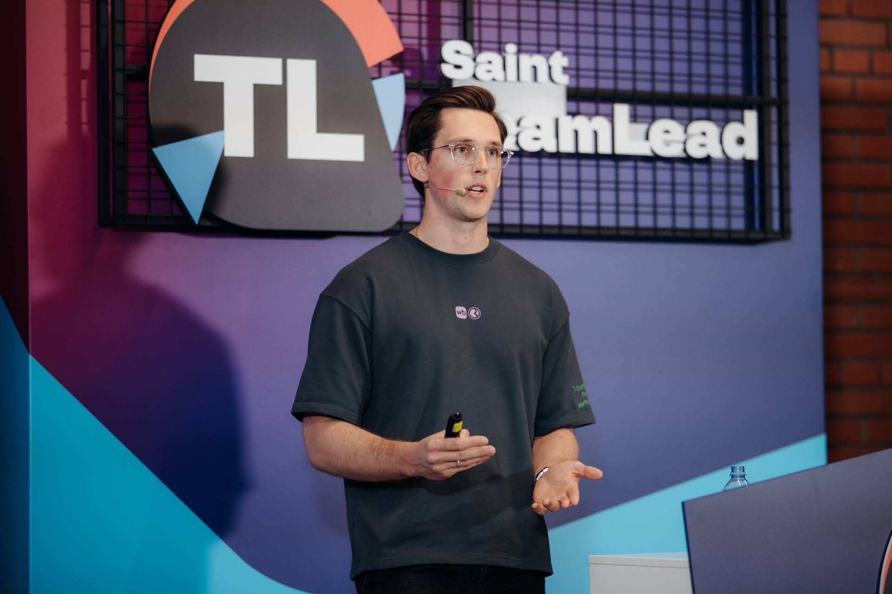

Управляй командой разработки уверенно: найм, люди, процессы
Я Влад — Head of Frontend в RWB, моя команда — 100 человек в 13 командах. Прошёл путь от стажёра до руководителя функции. На консультациях разбираю конкретную ситуацию и даю понятные следующие шаги, без обещаний «успешного успеха».

Привет! Меня зовут Влад. Я работаю в компании RWB, занимаю должность Head of Frontend. В моей команде 100 человек — это 13 команд фронтенд-разработчиков.
Я сам прошёл путь от стажёра до руководителя и хорошо помню, как это — быть на месте разработчика, тимлида и человека, который отвечает за всю функцию. Передо мной стояла задача масштабировать команду с 10 сотрудников. Я самостоятельно выстроил ключевые процессы: найм, онбординг, перфоманс-ревью. Для построения команды вырастил 10 тимлидов.
На тему найма с нуля выступил на конференции TeamLeadConf 2026. За 3 года в управлении решал кейсы сложных увольнений, проводил аудит внутренних команд разработки, помогал руководству проводить аудит под M&A. Управляю ФОТ, строил core-команду, определял стратегию всей функции фронтенда.
Мне важно не продавать «успешный успех», а разбирать конкретную ситуацию и давать понятные следующие шаги. Поэтому на консультациях мы будем работать с вашим контекстом: командой, процессами, людьми и решениями, которые предстоит принять.
Рецепты эффективного найма: как масштабировать процесс и не сойти с ума
Доклад на конференции о выстраивании процесса найма команды с нуля и его масштабировании без потери качества.
Смотреть доклад →Три основных направления
Найм, онбординг и развитие как система
- Разобрать текущий процесс найма: где теряются сильные кандидаты, какие вопросы и критерии работают, а какие — нет
- Собрать структуру собеседований и критерии отбора под вашу команду
- Выстроить онбординг так, чтобы новичок и наставник понимали, что делать в первые недели и месяцы
- Описать должностные инструкции и грейды с прозрачными критериями роста
- Настроить или пересобрать перфоманс-ревью: оценка, обратная связь, связь с развитием и мотивацией
Аудит и оздоровление команды
- Разобраться, почему команда «вроде работает», но результата нет
- Посмотреть на процессы, людей, мотивацию и коммуникацию как на систему
- Подготовиться к сложным кадровым решениям, включая увольнения, без хаоса и лишних конфликтов
- Провести аудит команды перед важным решением — покупка компании или присоединение команды
- Выстроить процессы взаимодействия: дежурства, core-команда, общие чаты, регулярные встречи
- Поддержать построение культуры, включая офлайн-мероприятия и неформальные сходки
Переход из Senior в TeamLead
- Разобрать, чего не хватает именно вам для перехода в тимлида
- Понять, как устроена роль тимлида в крупной компании: ожидания, ответственность, политика, коммуникация
- Подготовиться к первой команде, первым сложным разговорам и первым управленческим решениям
- Помочь подготовить доклад или выступление на конференцию, если хотите делиться опытом публично
Не «мотивация», а понятная картина и следующие шаги
Формат зависит от запроса. В целом после работы со мной вы уходите с конкретикой.
Разовая консультация
- Разбор текущей ситуации по осям: процессы, люди, мотивация, коммуникация, ограничения
- Карта проблем и приоритетов: что важно сейчас, а что можно отложить
- 2–4 конкретных следующих шага с ожидаемым результатом
- Короткое письменное резюме после встречи: наблюдения и рекомендации
Серия по найму / онбордингу / развитию
- Структура или чек-лист найма: вопросы, критерии, этапы
- Шаблон онбординг-плана для новичка и наставника
- Подход к должностным инструкциям и грейдам
- Схема перфоманс-ревью: как оценивать, давать обратную связь, связывать с ростом
- Понимание, где в процессе вы теряете людей и качество
Аудит команды
- Письменный или устный разбор состояния команды и процессов
- Список рисков и «точек, где больно»
- Приоритетный план действий: что делать в первую очередь, что — во вторую
- Рекомендации по кадровым решениям, если они назрели
Для тех, кто отвечает за команду разработки
Разработчики, которые хотят стать лидами или имеют управленческие вопросы
Тимлиды, которые ведут первую команду или ищут систему в управлении
Руководители больших команд разработки с тимлидами в подчинении
Владельцы бизнеса, которым нужен аудит процессов своей команды разработки
Чего я не обещаю
Инструменты и опыт
Первая сессия
Перед первой сессией заполните короткую анкету — она помогает сразу попасть в ваш контекст: команда, процессы, люди и задачи. Это экономит время на первой встрече.
Открыть анкету